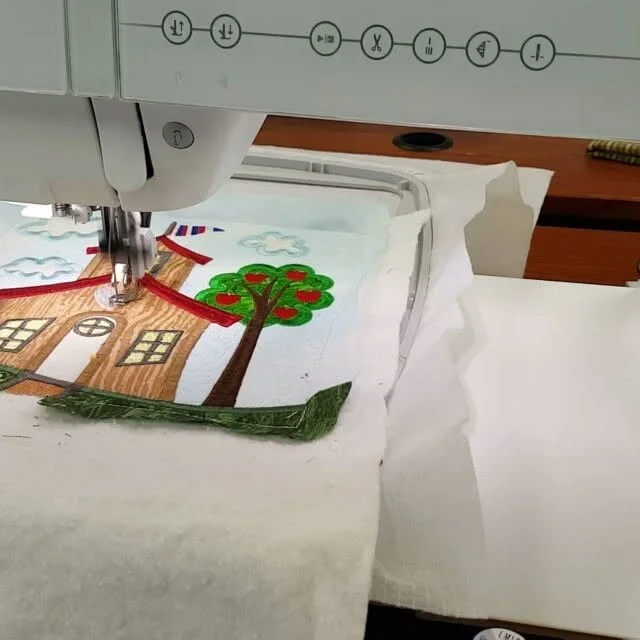
Machines
Sewing, embroidery and quilting machines and sergers. Authorized to sell Baby Lock, PFAFF, Singer and Husqvarna.
Machines we carryKnoxville & Goodlettsville, TN
Baby Lock, PFAFF and Husqvarna Viking machines. Owner classes that teach you the one you bought. An on-site service center at both stores that works on all makes. And 4000 more bolts up in Goodlettsville.
Both stores: Monday to Friday 10 to 5, Saturday 10 to 3.
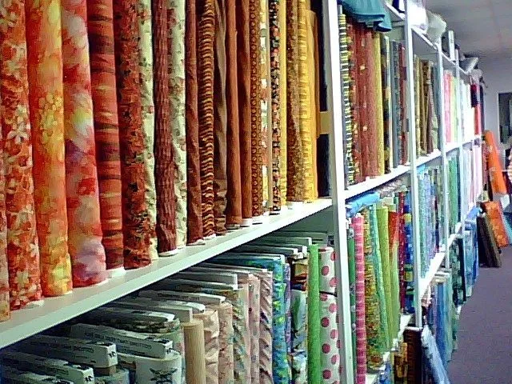
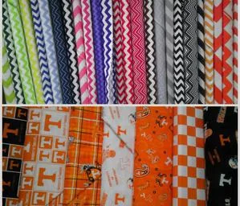
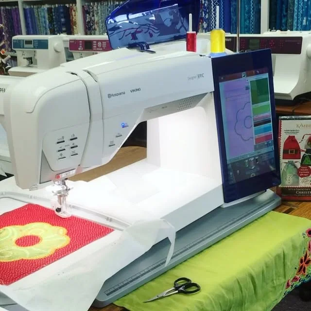
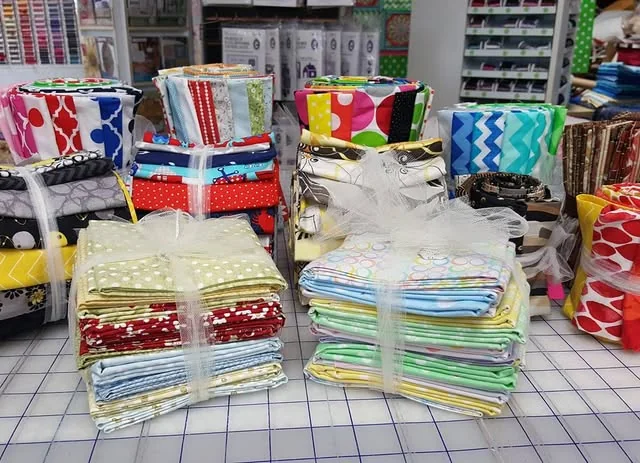
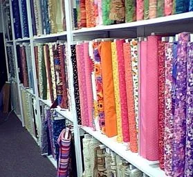
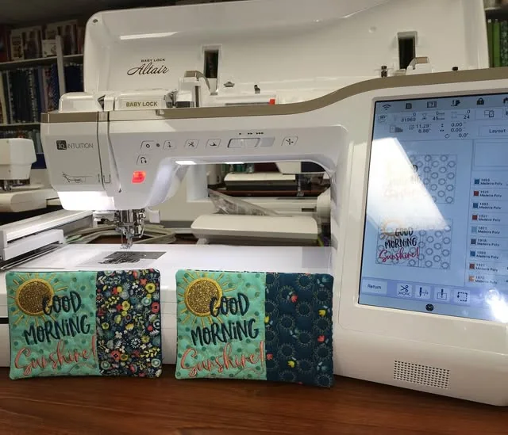
Every photo here is the shop’s own, from its website and Instagram.
That’s how the store puts it, and it’s the order most people need it in. Pick a machine, learn it, fill the stash, and know somebody in the back can fix it.

Sewing, embroidery and quilting machines and sergers. Authorized to sell Baby Lock, PFAFF, Singer and Husqvarna.
Machines we carry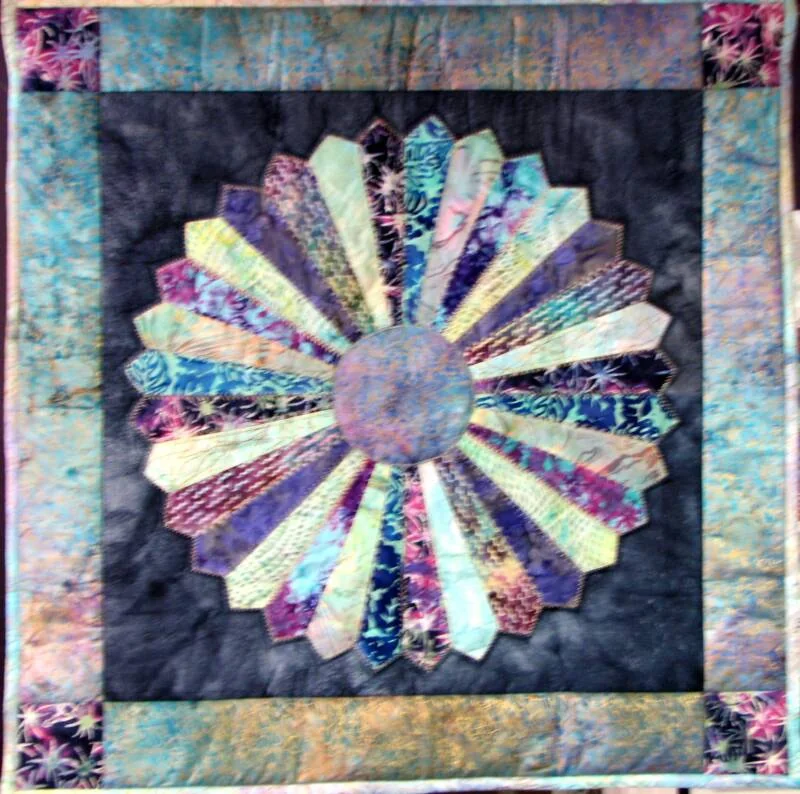
Basic Training owner’s classes for your new machine, plus embroidery, serger and project classes.
Classes at each store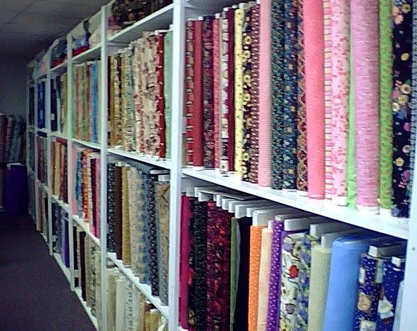
Over 8000 bolts in Knoxville and 4000 in Goodlettsville, from Moda and Riley Blake to Bali Batiks and Hoffman.
The fabric wallOwner: a photo of the service center with a machine open on the bench.
On-site service center at both locations. Sales and service, all makes, just like the sign says.
Fill out a drop-off tagAsk about SME Perks.
*See store for details. Basic Training owner’s classes carry no class fee for SME Perks owners; everyone purchases a kit.
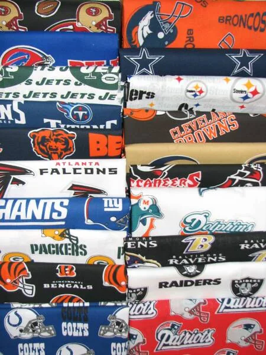
COLLEGE fleece, minky and cotton panels in stock. NFL team fat quarters when available. If you’re making a game day quilt in Knoxville, this is the wall.
“They have the absolute best selection of UT fabric you can find in the nation.”Camille Benson, Google review, a year ago
Word for word from Google, both stores.
“Very helpful staff, was greeted when I walk through the door with a genuine smile. Very knowledgeable staff that answered all my questions. So far, I have had nothing but a wholesome welcoming experience on every trip to this well stocked store! They have lots of beautiful fabrics. They are true quilters and love sharing what they love with others!”
“Sewing Machines, Etc. is a Knoxville staple for quilters and sewers alike. It is owned and run by three generations of women. ... Their knowledge and assistance is superb.”
“Great shop! Very informative & patient with the zillion questions I was asking, lol. Highly recommend them for their selections, pricing, and overall friendliness. I’m very happy with my purchase plus I get free follow up tutorials and discounts on future purchases.”
“...I was only shopping for fabrics but they had sewing machines, were taking in repairs, lots of notions & work areas for training. Again, lots of fabric!”
“Checked the business out for my wife who has recently picked up sewing. I was very impressed with their customer service. Dana helped my wife when we came back and really made us feel at home.”
“Had a wonderful shopping experience. Very friendly, helpful & knowledgeable crew. The reasonable fabric selections were a big bonus. Highly recommend & we’ll carry more friends to enjoy the experience.”
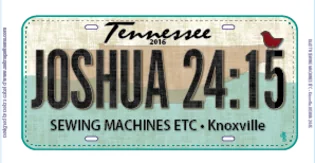
Knoxville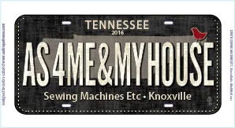
Knoxville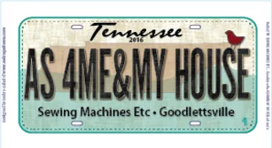
Goodlettsville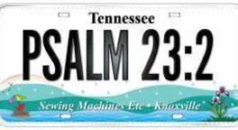
Knoxville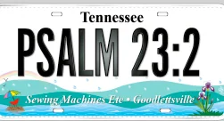
GoodlettsvilleClasses are listed separately for each location.
Knox · Kingston Pike
(865) 690-7770Nash · near Rivergate Mall
(615) 859-9900